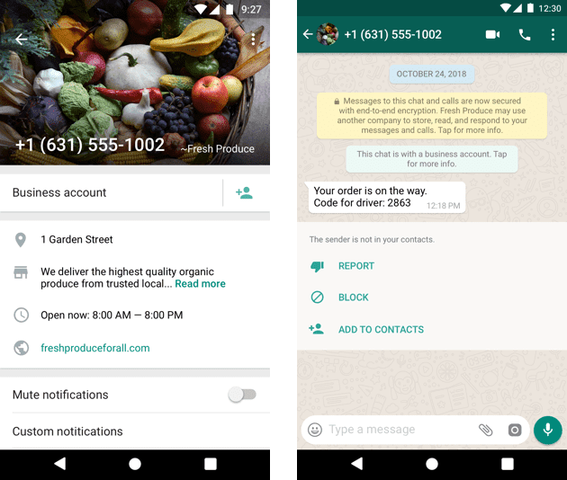
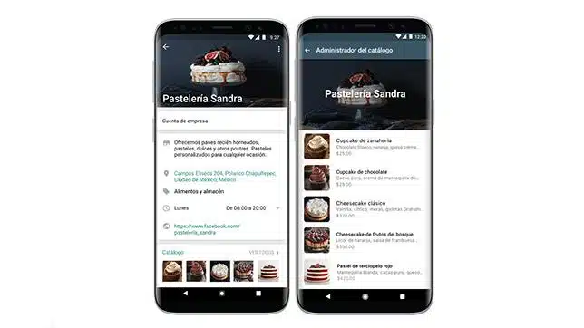
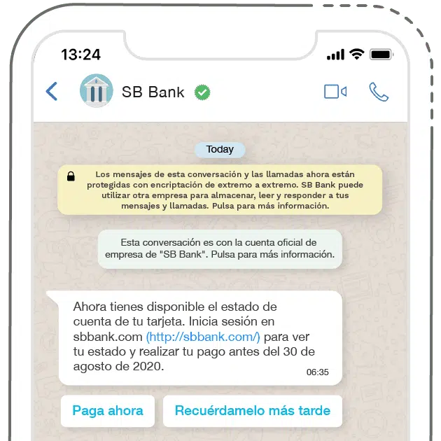

30 días para evaluar de forma gratuita
Pruebe nuestra plataforma de forma gratuita durante 30 días y revolucione la forma en que se comunica con sus clientes y colaboradores.

Consulta las principales dudas a la hora de contratar ConnectZap. Si necesita más información por favor contáctenos.
¿Qué es la API de WhatsApp?
La API de WhatsApp Business permite a las empresas integrar esta plataforma con sus productos o servicios. Una API (Interfaces de programación de aplicaciones) es una interfaz de programación de aplicaciones que conecta dos o más herramientas de software para que puedan comunicarse entre sí y compartir datos.
Por ejemplo, de esta forma los desarrolladores pueden conectar una plataforma de marketing o CRM a WhatsApp Business. El acceso a la API lo proporcionan los socios oficiales de WhatsApp Business, normalmente proveedores de SaaS de marketing. ¿Por qué? Porque la API de WhatsApp Business no es un software independiente, sino que utiliza una interfaz de terceros para crear campañas, realizar un seguimiento de los resultados y administrar listas.
Si ya existe una gran diferencia entre WhatsApp y WhatsApp Business, la API de WhatsApp Business añade aún más capas de funcionalidades para marketing, además de abrir las puertas a nuevas posibilidades:
La API de WhatsApp Business es una integración sólida diseñada para empresas medianas y grandes con equipos de soporte más grandes y tácticas de participación más complejas.
Podrás comunicarte directamente con cada cliente cuando lo necesites, ofrecerles una mejor experiencia y ahorrar tiempo gracias a las funciones de automatización. Todas estas prácticas forman parte del llamado marketing de WhatsApp.
¿Cómo utilizar la API de WhatsApp en tu negocio?
La forma más sencilla es acceder a la API de WhatsApp Business a través de un proveedor de soluciones empresariales. De esta manera, podrá utilizar una interfaz de plataforma más intuitiva sin tener que integrar la API directamente en su entorno backend. ¡Y te olvidas de programar!
Si no tiene una cuenta comercial oficial, el nombre de su empresa aparecerá junto a su número de teléfono en lugar de reemplazarlo.
Diferencias entre la API de WhatsApp Business y la aplicación WhatsApp Business
Si aún no sabes si debes usar WhatsApp API o WhatsApp Business tradicional, aquí te ayudamos a descubrir en qué se diferencia cada uno; De esta manera podrás tomar una mejor decisión:
| Características | WhatsApp Business API | WhatsApp Business App |
|---|---|---|
| Tipo de negocio gestionado | Medianas y grandes empresas | Pequeñas empresas con comunicación uno a uno |
| Automatización del servicio al cliente. | Autorespondedores y plantillas de mensajes | Mensajes de bienvenida y mensajes de ausencia automáticos. |
| Integración de Herramientas Complementarias | Sí (CRM, Chatbot, Chat en vivo, etc.) | No |
| Integración con otras herramientas | Sí | No |
| Costo asociado | Sí (Dependiendo del socio y plan elegido) | No. (Totalmente gratis) |
Características de la API de WhatsApp
El perfil de empresa en WhatsApp es como una tarjeta de visita. Puede agregar un logotipo, dirección, horario comercial e incluso productos directamente. De esta forma, los usuarios podrán ver esta información en la aplicación sin tener que visitar su sitio web.
Es importante saber qué tipos de mensajes admite WhatsApp para aprovechar al máximo la API y presupuestar los costos.
Mensajes recibidos y enviados
Una gran ventaja de los mensajes de WhatsApp sobre los SMS es que pueden ser mensajes multimedia (con imágenes, vídeos, archivos adjuntos, botones de respuesta, productos y listas).
El mensaje saliente de ejemplo que se muestra también es un ejemplo de mensaje automático. Esto significa que puedes automatizar los mensajes de WhatsApp para ahorrar tiempo, especialmente en tareas repetitivas. Las automatizaciones son respuestas enviadas cuando se cumplen condiciones predefinidas. Por ejemplo, puede programar una respuesta automática de confirmación de pedido que llegue al usuario cada vez que realiza una compra.
Una vez que tenga una plantilla de WhatsApp metaaprobada (explicada en los pasos anteriores), puede crear un escenario de automatización donde la acción final sea enviar un mensaje de WhatsApp. Las respuestas automáticas pueden ser muy variadas: mensajes de bienvenida, confirmaciones de pedido, recordatorios y mucho más. Se trata de mensajes que se utilizan mucho, por ejemplo, en el comercio electrónico (comercio electrónico).
A los ojos de los usuarios, las respuestas automáticas ofrecerán una experiencia similar a la que puede ofrecer un chatbot. Sin embargo, este tipo de mensajes no funcionan de la misma forma. Son respuestas que se envían cuando se cumplen una serie de condiciones que tú has determinado, pero no pueden improvisar respuestas ni te permiten chatear con un usuario como lo hace un chatbot.
Resumindo, o que a API do WhatsApp permite é aproveitar os benefícios do uso da automação (ou automação em espanhol): elas podem ajudá-lo a delegar tarefas repetitivas e a usar seu tempo para definir sua estratégia de marketing, explorar o potencial desta ferramenta , es mucho más.
Otro aspecto importante de la API de WhatsApp Business son las sesiones de 24 horas, que afectan tanto al precio como a las acciones permitidas.
Si un usuario te contacta por WhatsApp, tienes 24 horas para responder con un mensaje de formato libre o intercambiar tantos mensajes como sea necesario. Si han pasado más de 24 horas desde el último mensaje del cliente, puedes reabrir la conversación con una plantilla de mensaje. Es una forma de garantizar que el usuario solo reciba mensajes relevantes que sigan las políticas de WhatsApp.
Si deseas iniciar una conversación, deberás utilizar un mensaje saliente y además seguir una plantilla. Puede crear plantillas en Facebook Business Manager o utilizando la interfaz API de WhatsApp Business de su proveedor. A continuación encontrará algunos de los modelos disponibles. Por ahora no se pueden editar; simplemente bórralo. Es mejor utilizar una cuenta de prueba para no tener que editarla.
¿Para qué sirve la API de WhatsApp Business?
Según una encuesta realizada por Facebook, el uso de mensajes para contactar con empresas ha crecido exponencialmente, especialmente en los mercados emergentes.
El 76% de los encuestados en Brasil informaron que comunicarse a través de mensajes les ayuda a confiar más en una marca. A su vez, una de cada dos personas encuestadas considera que enviar mensajes es una forma moderna de comunicarse con las empresas.
Este proceso, ya establecido hace unos años, se aceleró drásticamente a lo largo de 2020, haciendo del uso de WhatsApp para las empresas un canal necesario para contactar con los consumidores y concretar ventas.
La API de WhatsApp te permitirá ampliar las funciones de WhatsApp, pero también añadir otras nuevas que sólo están disponibles en la versión oficial:
A medida que aumenta el volumen de clientes en cualquier negocio, se hace necesario implementar un software que ayude a organizar la información recibida. Ya sea para gestionar leads, nuevos clientes o quejas de clientes habituales. Pero también se implementan para organizar todos los canales de comunicación que pueda tener una empresa: Messenger, Instagram, la página web y, como ya habrás adivinado, WhatsApp.
Con la implementación de la API oficial podrás tener los permisos necesarios para que la información recibida vía WhatsApp sea gestionada por tu CRM o para que tus agentes de atención al cliente respondan diferentes consultas utilizando una misma cuenta.
La posibilidad de enviar mensajes es una de las grandes ventajas que ofrece la API oficial. Gracias a esta funcionalidad podrás crear grupos de difusión para que tus clientes puedan estar al día de las últimas novedades sobre tu negocio.
Podrás generar un newsletter, informar cambios, nuevos productos o servicios, enviar catálogos, alertarte sobre citas médicas, enviar encuestas, entre otras cosas.
Te permite posicionarte desde un lugar más activo en las comunicaciones y no depender únicamente de ingresar una consulta para poder enviar información. Al estar más presente en la vida de sus clientes, mejorará el compromiso y el reconocimiento de la marca.
Una de las cuestiones más interesantes a la hora de implementar mejoras en el área de atención al cliente es poder resolver todas las dudas.
Dado que los humanos tienen una capacidad de atención limitada o que solo hay un cierto número de empleados trabajando en horarios limitados, es imposible responder a todas las preguntas tan pronto como surgen.
Sin embargo, gracias a la automatización, es posible configurar mensajes de bienvenida y salida para nuevas consultas. O, si quieres ir aún más lejos, implementa un chatbot que esté siempre disponible para responder (el desarrollo del chatbot será responsabilidad de cada empresa).
Con estas funciones podrás digitalizar tu negocio y situarte donde están tus usuarios.
Empezar a disfrutar de los beneficios de esta interfaz es tan sencillo como contratar un proveedor de soluciones.
¿Cómo utilizar la API de WhatsApp para enviar mensajes?
Si usas la aplicación WhatsApp Business y deseas migrar la API, puedes migrar el número de teléfono y asociarlo con la API.
Si no tiene una cuenta de WhatsApp Business (es decir, una cuenta comercial), también puede crearla directamente en este paso en la plataforma de socios.
Verificar su negocio en Meta es un paso obligatorio que protege al consumidor. WhatsApp necesita verificar que estás autorizado para representar la marca que estás registrando. Todas las cuentas comerciales pasan por este proceso para evitar contactos fraudulentos con los usuarios.
El proceso de aprobación suele realizarse mediante inteligencia artificial, por lo que sólo te llevará unos minutos. Existen muchos tipos de plantillas de mensajes de WhatsApp con diferentes usos, como puedes ver en la imagen a continuación.
Los usuarios pueden dar su consentimiento en su sitio web o mediante un botón de llamada a la acción de Facebook, un código QR o un anuncio. Estos son los requisitos de consentimiento en WhatsApp.
¿Esta integración funciona tanto en Android como en iOS?
Sí. El mensaje se enviará a cualquier dispositivo que permita instalar la aplicación oficial de WhatsApp, ya sea celular o tablet.
¿Existe un límite en la cantidad de mensajes que se pueden enviar?
No. Al comprar Connect Zap, el cliente puede vincular su dispositivo a WhatsApp a través de WhatsApp Web usando un código QR y puede enviar mensajes masivos de WhatsApp según lo desee.
¿Los mensajes se almacenan en la plataforma Connect Zap?
No. Connect Zap no almacena ningún mensaje ni número enviado. Únicamente facilita la comunicación entre el sistema y el WhatsApp del usuario conectado a la plataforma.
¿Qué sistemas se pueden integrar con Connect Zap?
La mayoría de los sistemas desde Connect Zap utilizan Rest/JSON como estándar para leer y enviar mensajes.
Pruebe nuestra plataforma de forma gratuita durante 30 días y revolucione la forma en que se comunica con sus clientes y colaboradores.